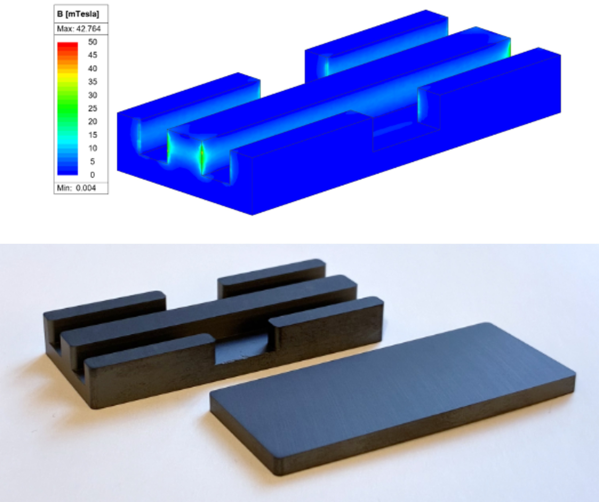
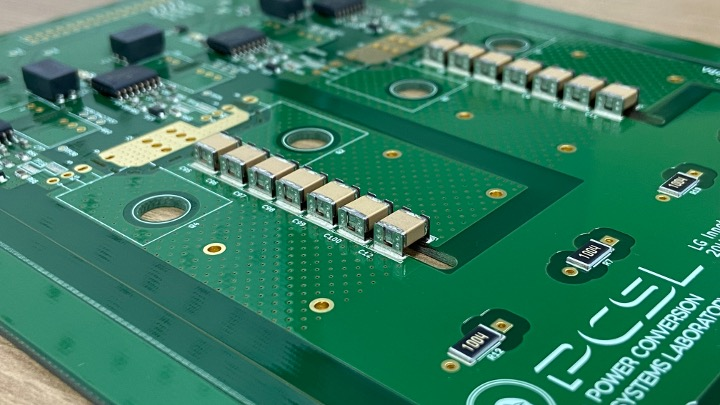
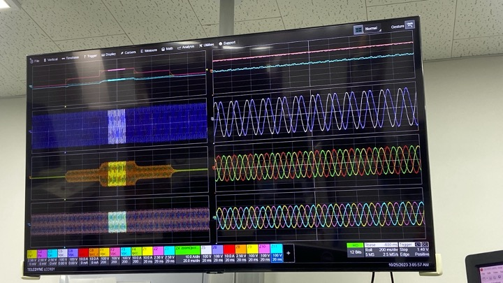
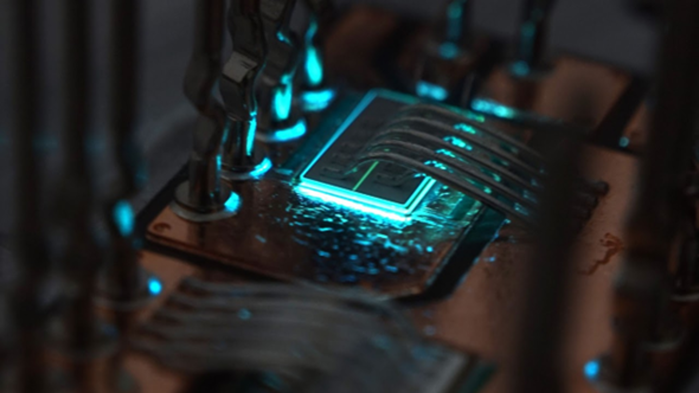
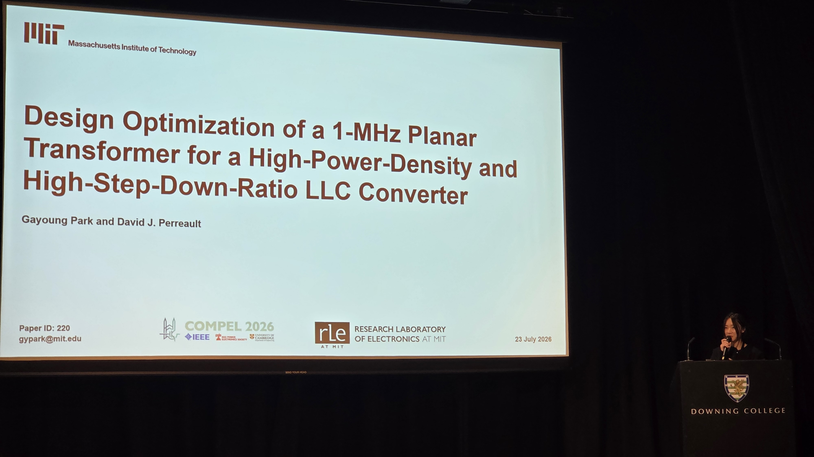
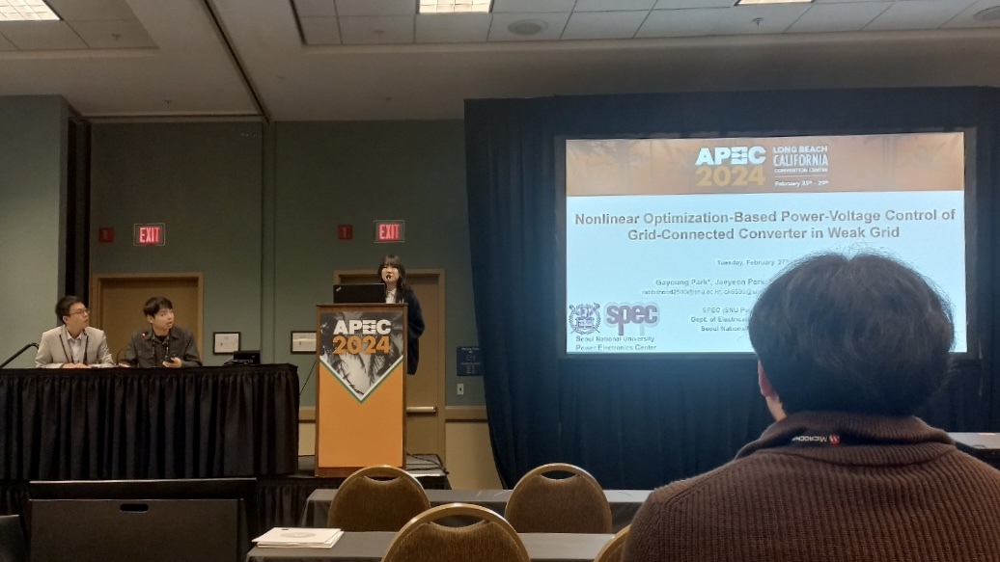
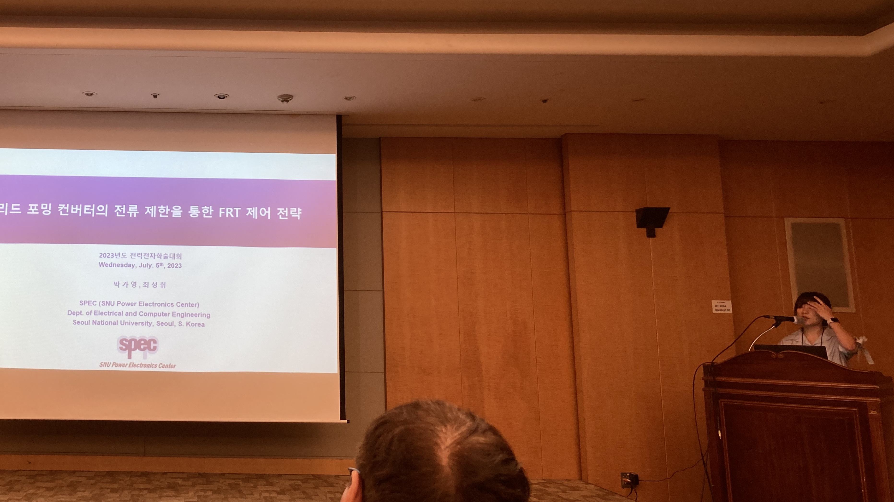

I am a Ph.D. student in Electrical Engineering and Computer Science at MIT, advised by Professor David J. Perreault.
My research focuses on high-frequency, high-power-density power conversion for transportation electrification and data center power delivery.
Currently, I am designing a 1-MHz high-step-down LLC converter for EV low-voltage DC-DC systems, including its planar transformer and control strategy.
Previously, at Seoul National University under Professor Shenghui Cui, I designed and experimentally validated a 40 kW SiC-based dual-active-bridge (DAB) converter for bidirectional EV fast charging, achieving a peak efficiency of 98.8%.
I am supported by the KFAS Ph.D. Study-Abroad Scholarship, and I was previously supported by the Domestic Graduate Scholarship from the SBS Cultural Foundation.
My research interests include data center power supplies, renewable integration, and transportation electrification.
Outside of research, I love traveling around, taking photographs, and playing a guitar.
Find more about me here ↓
Projects

1-MHz High-Step-Down LLC Converter for EV Applications
Graduate Student Researcher, MIT (Sep. 2025 - Present)
- Optimized 1-MHz planar transformer design (first-author, IEEE COMPEL 2026).
- Designed and validated GaN HB of a 1-MHz high-step-down LLC-DCX for EV low-voltage DC-DCs.

40 kW Isolated Bidirectional DC-DC Converter for EV Fast Charger
Graduate Student Researcher, SNU in collaboration with LG Innotek (Sep. 2023 – Feb. 2025)
- Designed and experimentally validated a high-density SiC-based DAB prototype, achieving a peak efficiency of 98.8%.
- Developed a nonlinear optimization-based modulation scheme to maximize the ZVS range while minimizing RMS current (first-author, IEEE Trans. Power Electron., 2025).

MCU Control Interface Board Design and Valication
Graduate Student Researcher, SNU in collaboration with KEPCO Research Institute (Jan. 2023 – Sep. 2024)
- Designed and validated a mixed-signal closed-loop controller board with a TI TMS320F28379D MCU, SPI, DACs, ADCs, PWM outputs, and hardware fault protection.
- Constructed a Typhoon HIL testbed to validate grid-forming control for 3-level VSCs.

Grid-Forming Control and Fault-Ride-Through Design for Inverter-Based Resources
Graduate Student Researcher, SNU in collaboration with KEPCO Research Institute (Jan. 2023 – Sep. 2024)
- Formulated fault-ride-through and current-limiting strategies, and developed an online nonlinear optimization-based power-voltage control method for weak grids (first-author, IEEE APEC 2024).

3.2 kW Titanium Plus Power Supply for Data Center Power Delivery
Undergraduate Student Researcher, SNU in collaboration with LG Innotek (Sep. 2022 – Feb. 2023)
- Contributed to the design and validation of a SiC/GaN totem-pole bridgeless PFC stage for 80 PLUS Titanium data-center power supplies.

Gate Driver Circuit Design for 3-Phase 2-Level Voltage Source Converter
Exchange Undergraduate Student Researcher, EPFL, Lausanne, Switzerland (Feb. 2022 – Jun. 2022)
- Designed a gate-driver board with isolated voltage sensing and controller interfaces for a 2-level VSC.

Temperature Estimation of SiC MOSFETs Based on Temperature-Sensitive Optical Parameters
Course: Power Semiconductor Devices (Fall 2022)
- Designed a light-receiving circuit for temperature-sensitive optical parameter sensing of SiC MOSFETs.
- Performed experimental luminescence and temperature characterization under varying operating currents.

1 kW BLDC Motor Control for Driving an Electric Scooter
B.S. Thesis / Capstone: Design Project for Electrical Devices and Systems (Fall 2021)
- Designed and implemented a 1 kW BLDC motor drive (48 V battery, 3-phase 2-level inverter) with closed-loop control on the TI TMS320F28379D MCU, programmed in C via Code Composer Studio.
Presentations
DRAG ON / TAP images to view presentations!

2026 IEEE Workshop on Control and Modeling for Power Electronics
Title: Design Optimization of a 1-MHz Planar Transformer for a High-Power-Density and High-Step-Down-Ratio LLC Converter

2024 IEEE Energy Conversion Congress and Exposition
Title: Optimization of Transformer Design Parameters of a 20 kW SiC-Based Dual-Active Bridge Converter for Enhanced Efficiency

2024 IEEE Applied Power Electronics Conference
Title: Nonlinear Optimization-based Power-Voltage Control of Grid-Connected Converters in Weak Grids

2023 KIPE Power Electronics Conference
Title: Current limiting FRT strategy of GFM converters
Publications
Journal Articles
G. Park, H. Kim, B.-K. Cho and S. Cui
IEEE Transactions on Power Electronics, vol. 40, no. 7, pp. 9004-9018, Jul. 2025.
J. Maeng, J. Ham, G. Park, J. Park, H. Wu, J.-J. Jung and S. Cui
International Journal of Electrical Power and Energy Systems, vol. 172, pp. 111174, 2025.
C. Im, J. Ham, J. Maeng, G. Kim, S. H. Park, J. Kim, J. Lee, G. Park, J. T. Lee, K. Choi, U. Bong, S. Cui, S. Hahn and S. Lee
IEEE Transactions on Applied Superconductivity, vol. 34, no. 5, pp. 1-6, Aug. 2024, Art. no. 4604906.
Conference Papers
Design Optimization of a 1-MHz Planar Transformer for a High-Power-Density and High-Step-Down-Ratio LLC Converter
G. Park and D. J. Perreault
2026 IEEE 26th Workshop on Control and Modeling for Power Electronics (COMPEL), Cambridge, UK, 2026. (Accepted)
G. Park, H. Kim and S. Cui
2024 IEEE Energy Conversion Congress and Exposition (ECCE), Phoenix, AZ, USA, 2024, pp. 3034-3039.
G. Park, J. Park, S. Cui and S.-K. Sul
2024 IEEE Applied Power Electronics Conference and Exposition (APEC), Long Beach, CA, USA, 2024, pp. 228-233.
G. Park and S. Cui
2023 Korean Institute of Power Electronics (KIPE) Power Electronics Conference, pp. 74-76, Jul. 2023.
Education
Ph.D. in Electrical Engineering and Computer Science
Massachusetts Institute of Technology (MIT), Cambridge, MA · Sep. 2025 – Present
Advisor: Prof. David J. Perreault
M.S. in Electrical and Computer Engineering
Seoul National University, Seoul, South Korea · Mar. 2023 – Feb. 2025 · GPA: 4.02/4.3
Advisor: Prof. Shenghui Cui
Thesis: Optimization of Modulation Scheme and Transformer Design of Dual-Active Bridge Converter for Improved Efficiency
B.S. in Electrical and Computer Engineering
Seoul National University, Seoul, South Korea · Mar. 2018 – Feb. 2023 · GPA: 3.93/4.3
Honors: Summa cum laude
Honors & Awards
- Ph.D. Study-Abroad Scholarship, Korea Foundation for Advanced Studies (KFAS), Fall 2024 – Present. Annual research grant for up to 5 years (1 of 4 recipients in Electrical Engineering, 2024).
- Domestic Graduate Scholarship, SBS Cultural Foundation, Fall 2023 – Fall 2024. Full tuition and monthly research grant (1 of 9 recipients, 2023).
- SNU Tomorrow's Engineers Membership (STEM), Spring 2021 – Spring 2022. Honor society for engineering students with academic excellence.
- Yangyoung Foundation Scholarship, Spring 2020 – Fall 2021. Full tuition support for outstanding undergraduate students.
- Academic Excellence Scholarship, Spring 2018. Full-ride scholarship for academic excellence.
- Hanseong Son Jae-han Scholarship, 2016 – 2017. Research grant for high school students with exceptional scientific potential.
- 2nd Place, Korean Physical Society Physics Camp for High School Girls, Summer 2015. Topic: Piezoelectric energy harvesting soccer ball (poster presentation at the 2015 KPS Fall Meeting).